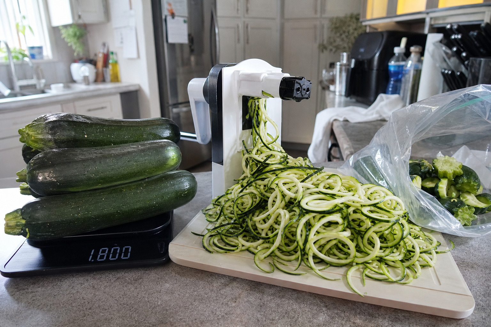
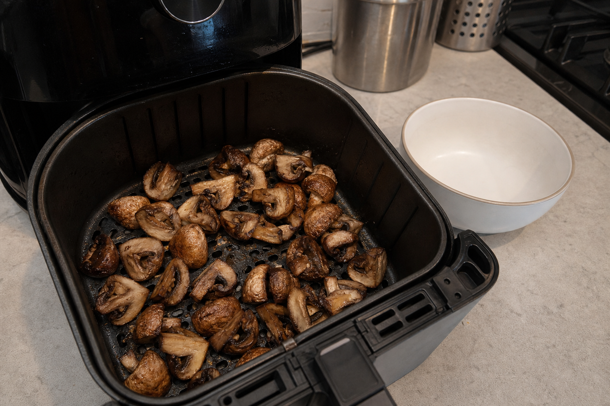
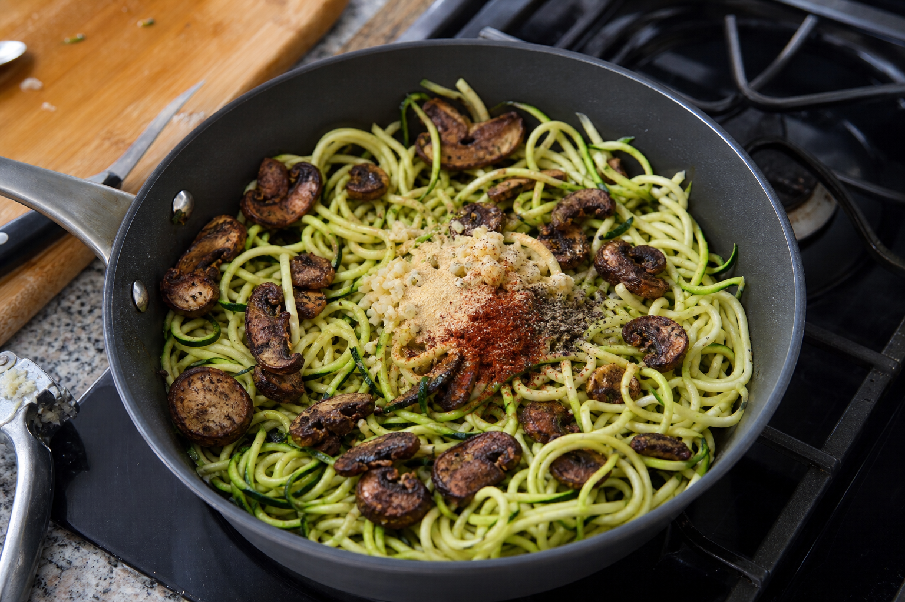
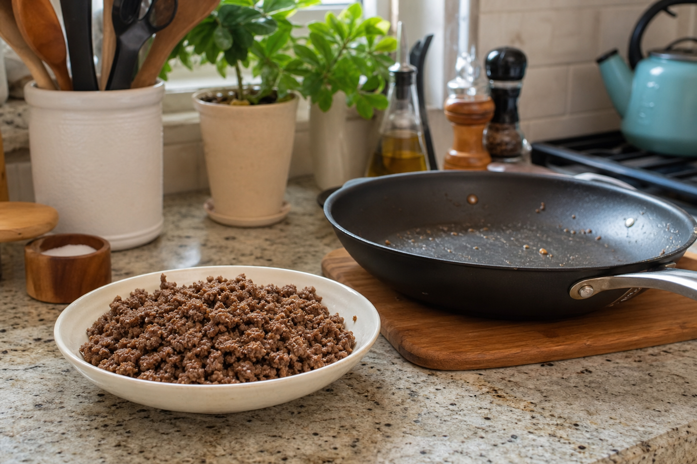
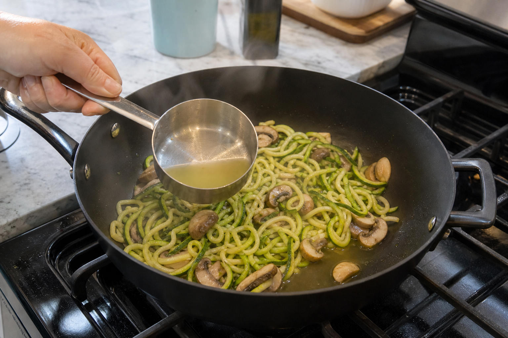
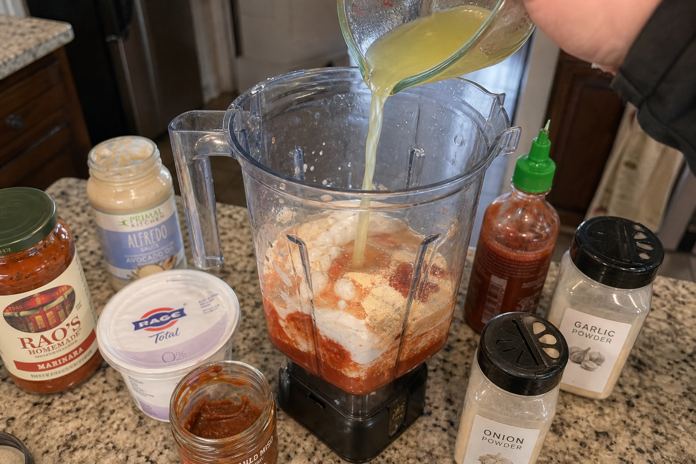
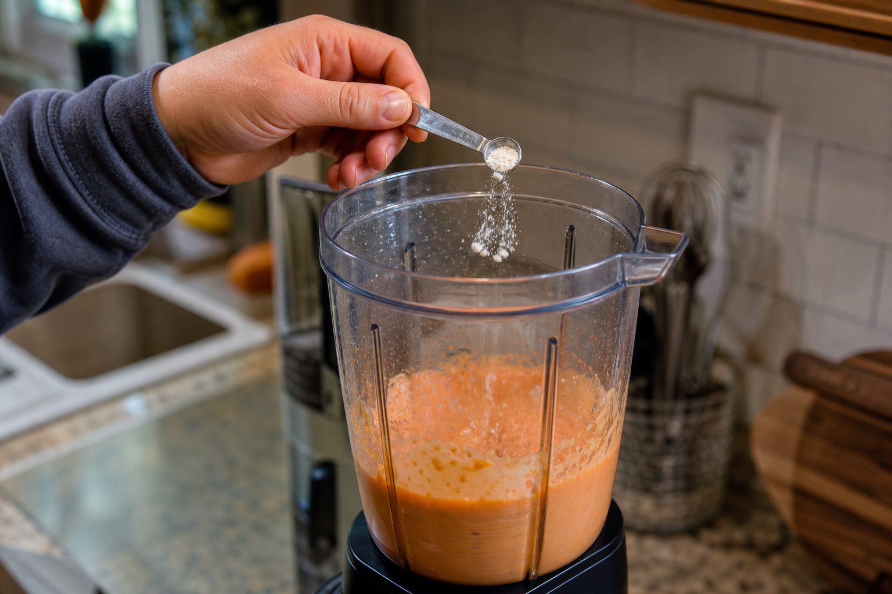
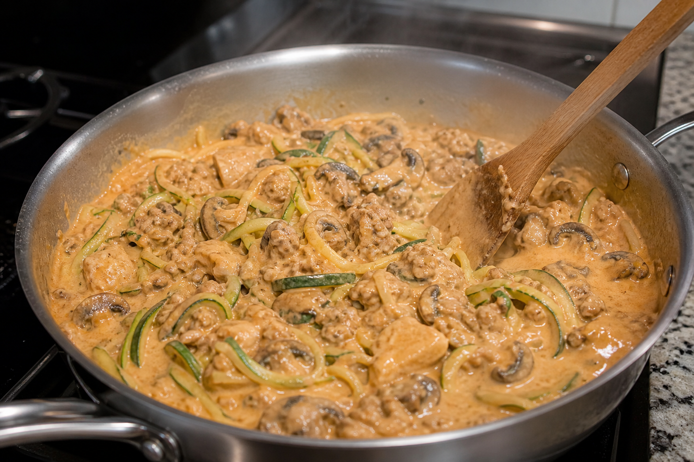

1. Spiralize the zucchini
Weigh 1,800g zucchini before trimming. Spiralize the zucchini with an electric spiralizer. Save the leftover zucchini ends in a bag for shakes or another use.

A huge, flexible, high-volume meal prep bowl built around zucchini noodles, mushrooms, your choice of fully cooked protein, and a creamy marinara-alfredo-yogurt sauce. Built for fat loss while staying full; not low sodium.
Weigh 1,800g zucchini before trimming. Spiralize the zucchini with an electric spiralizer. Save the leftover zucchini ends in a bag for shakes or another use.

Add 8 oz (227g) baby bella mushrooms to the air fryer. Cook at 400°F (205°C) for about 5 minutes, shaking once halfway if possible. Set aside.

Place the spiralized zucchini in a large pan. Add the air-fried mushrooms, minced garlic, garlic powder, smoked paprika, and black pepper. Toss everything together, but do not turn on the heat yet.

Choose one protein option: 225g 93% lean ground beef, 300g chicken breast, 200g sirloin steak, 150g chicken plus 150g sirloin, or 300g trout. Cook the protein fully in a separate pan, grill, or air fryer, then set it aside.

Turn the zucchini pan to medium-high heat, about 14/20. Cook until the zucchini softens and releases liquid, keeping some structure so it does not become mush. Pull some zucchini cooking liquid from the pan before adding sauce so you can control the final texture.

In a blender, combine 150g Classico marinara, 150g low-cal Classico alfredo, 150g plain Greek yogurt, about 5g red miso paste, sriracha to taste, garlic powder, onion powder, and some reserved zucchini cooking liquid. Blend until smooth.

Add ⅛ teaspoon xanthan gum slowly and blend again until the sauce has a creamy vodka-sauce texture. Xanthan gum thickens fast; too much can turn the sauce gummy.

When the zucchini is cooked, add the cooked protein to the pan. Lower the heat to low, about 4/20. Pour in the blended sauce and mix thoroughly. Keep it at a gentle simmer; do not boil after adding the yogurt sauce.

Let everything sit briefly so the sauce coats and thickens. Transfer to a large 5-cup-or-larger container or divide into meal-prep portions. Total yield is about 5 lb of food, or 4–6 servings depending on your goals.

Store in the fridge and eat within 3–4 days. Reheat thoroughly. Avoid overheating after the sauce is added or during reheating to reduce the chance of curdling.